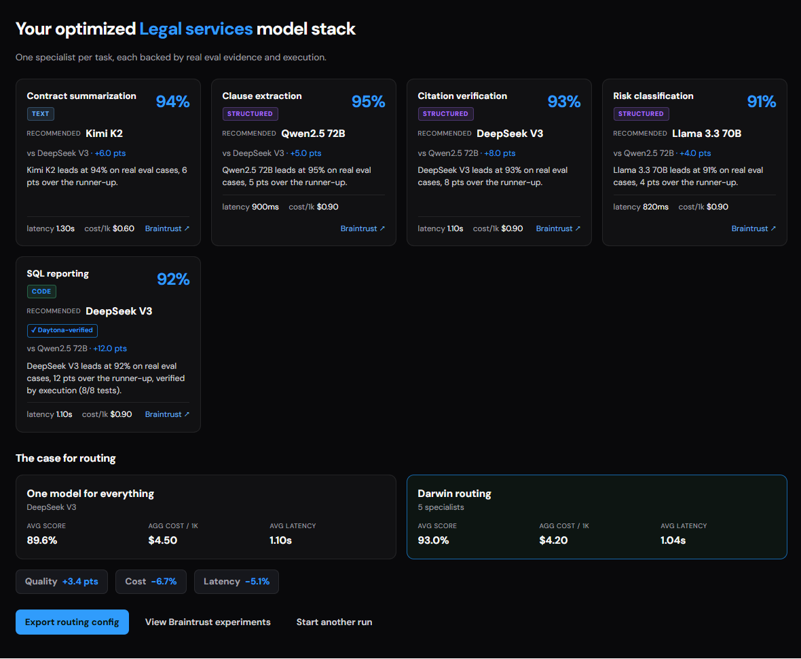

Darwin (Daytona HackSprint)
Instead of asking which LLM is “the best,” Darwin breeds and tests agents automatically, then tells you which model is best at each specific task, backed by real cost and latency data.
trydarwin.pages.devRole
Lane A: Evolution & Pipeline
Tools
Python, Fireworks API
Models
kimi-k2p6, glm-5p1, gpt-oss-120b
Status
Complete
Team
Lane A
Built the evolutionary loop and task-data path: monotonic elitism, model-gene mutation support, industry decomposition, synthetic evaluation generation, reviewed Legal/Support datasets, and routing-card outputs.
Lane B
Built the secure execution layer: Daytona/local sandbox pool, snapshot and rollback behavior, parallel evaluation support, and safety guards that screen suspicious genome mutations before they run.
Lane C
Built the evaluation and model-inference side: immutable fitness scoring, Braintrust experiment/logging integration, Fireworks client infrastructure with retries/concurrency/cost/latency tracking, and the live model-race mutation flow.
Lane D
Built the product experience: dashboard, landing page, live run views, WebSocket event wiring, fitness/lineage/model-race visualizations, docs/demo flow, and the overall presentation layer.
The Hackathon
Darwin was built over a single day at Daytona HackSprint #5, a one-day AI building sprint in San Francisco. Teams of up to four had from morning until 3:30 PM to ship something original, technically strong, and genuinely useful, then three minutes to prove it live on stage. The objective was open-ended: build an AI agent that could reason, decide, and use real tools on its own. Daytona sponsored the event and provided the sandboxed execution environment we used to run each agent in isolation, Fireworks sponsored the LLM API that powered the live mutations, and Braintrust provided experiment tracking and logging.
See the event pageProblem
There's no single "best" LLM. Models behave differently depending on the task at hand. One is great at summarizing, another at extracting clauses, a third at writing code. Cost and latency matter too, and so do the prompt and the tools an agent has access to. So the real question isn't "which model is best?" but "which one is best at this task, at this cost and speed?" Darwin was built to answer that automatically, and the hard part was making the evolutionary loop that explores it reliable and repeatable, plus turning a broad industry into evaluation data the loop can actually run on.
Design and approach
My part was the evolutionary loop itself and the pipeline that turns a broad industry into real evaluation data. Think of each agent as a genome: its model, system prompt, tool implementations, and parameters are all part of its DNA. Every generation, each agent runs inside an isolated sandbox against hidden test cases and gets a fitness score. The best ones survive unchanged; the rest get mutated by an LLM that looks at what went wrong and rewrites the weakest piece. If a mutation helps, it sticks; if it hurts, the system rolls back. This repeats until the task is solved or the generation budget runs out. It works two ways: a fully offline mode that reaches a solved state with no network at all, and a live mode where Fireworks models propose the mutations.
The pipeline side takes an entire industry and breaks it down into concrete, measurable tasks: clause extraction, contract classification, summarization, each paired with its own hidden evaluation set. I built and verified two complete industry datasets (Legal and Support), each with five tasks and ten cases per task, for 100 real evaluation cases generated live through Fireworks. To make the output actually useful instead of just “Model X won,” I added a routing card for each task showing the winning model, the best alternative from a different model, the score, the estimated cost, and the median latency, so you walk away with actionable evidence, not a leaderboard.
The Evolutionary Loop
Darwin homepage
Evaluation Lab & 3D Landscape
Legal services evaluation grid
Challenges
During live generation, Fireworks rejected the JSON schema I was producing with Pydantic because part of it wasn't supported by the API. I read the error, figured out which constructs were the problem, and redesigned the flow so the model returns a plain string that Darwin parses locally back into the right Python value, keeping structured answers (strings, booleans, lists, labels) working without hitting the unsupported schema. The other tricky part was merging my work back into a main branch that had moved significantly while I was heads-down on my lane. Rather than blindly merge, I compared across separate worktrees, kept the newer shared Fireworks client and telemetry, and ported back the offline demo, routing cards, and reviewed evaluation data.
Results
The offline loop climbs steadily from 0.375 to a perfect 1.0 fitness across five generations, with no external services, fully repeatable, so there's always a reliable fallback if the live API is down. Live Fireworks mutation was verified from a real terminal run showing the model actually switching (kimi-k2p6, glm-5p1) with fitness climbing 0.375 → 0.625 → 0.875 → 1.0. The Legal and Support pipelines produced 100 evaluation cases, all reviewed and promoted into the task corpus. Crucially, the evaluator is kept separate from the genome, so a mutation can't rewrite the grading function to cheat, and the routing cards give you per-task, auditable evidence with real cost and latency behind every recommendation.

Optimized Legal services model stack routing card